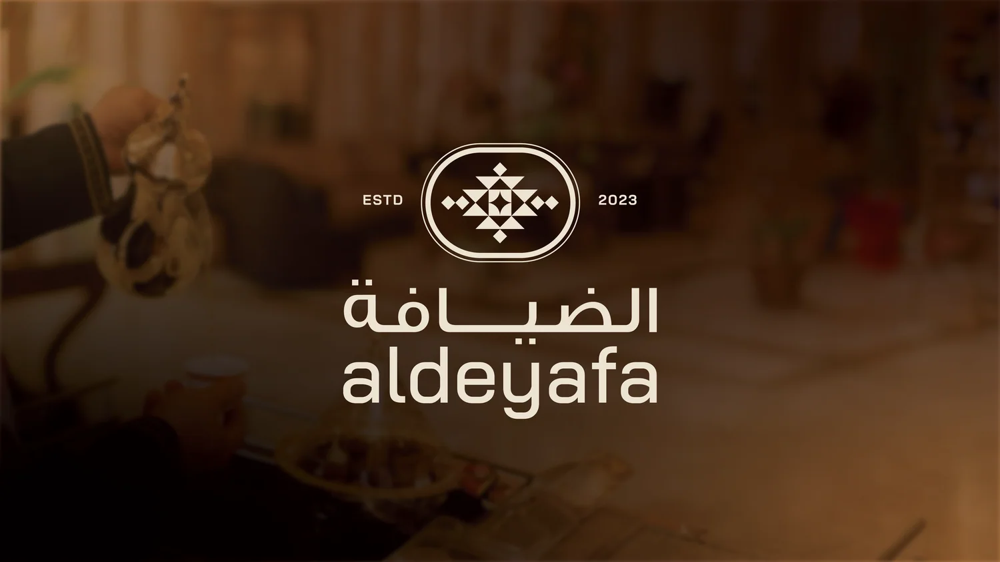
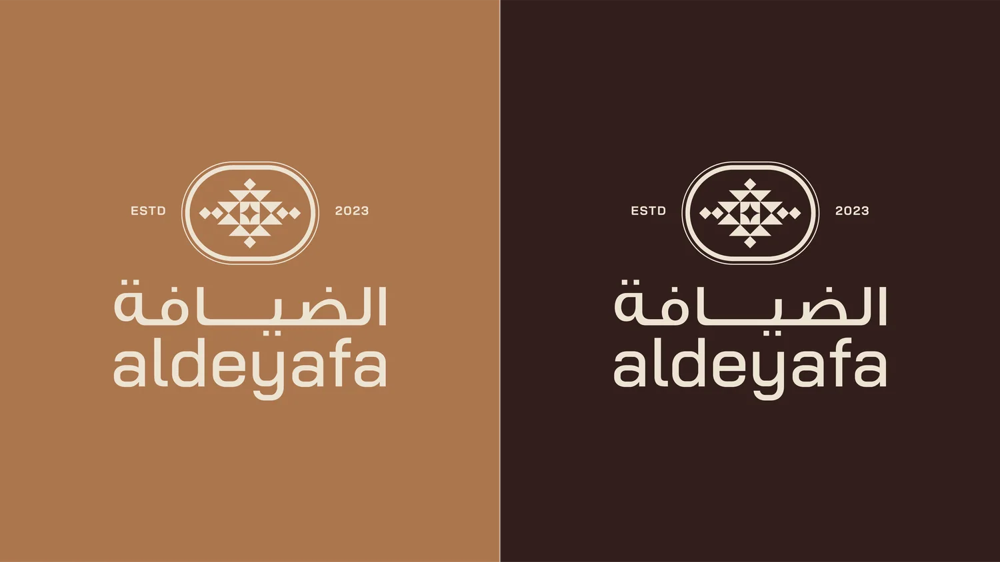
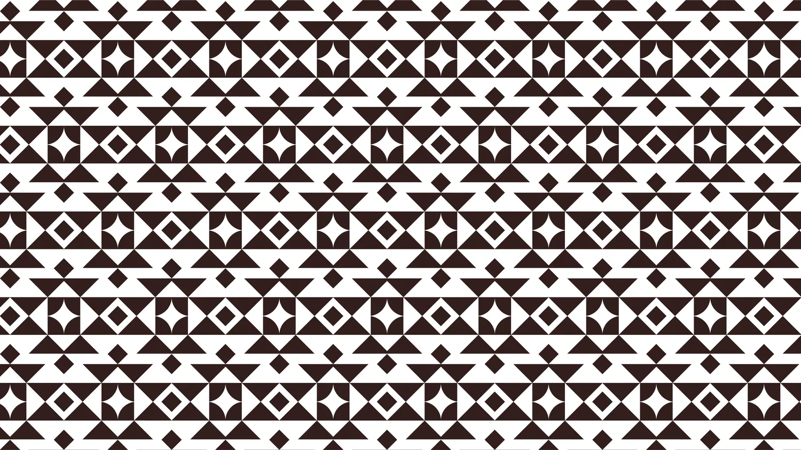
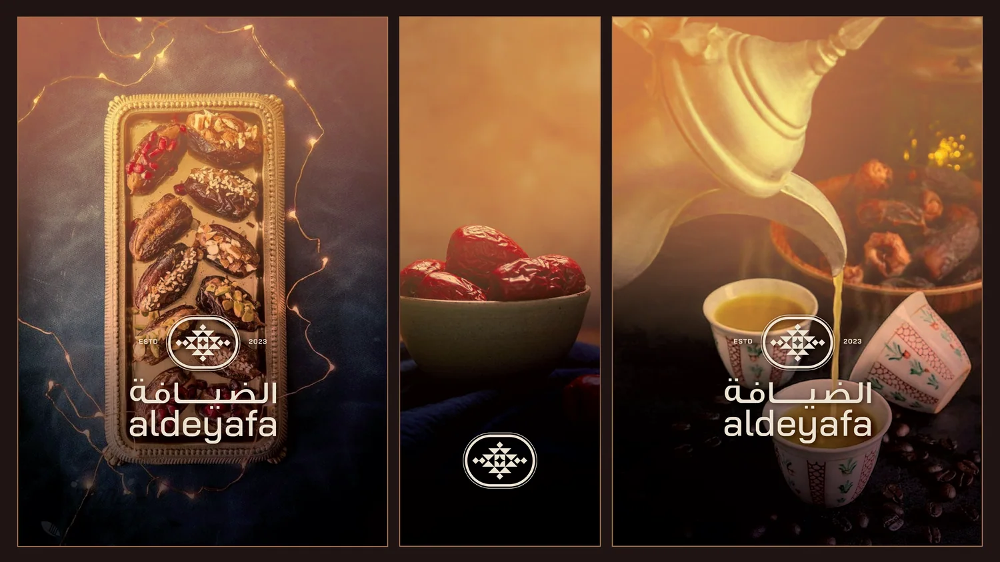
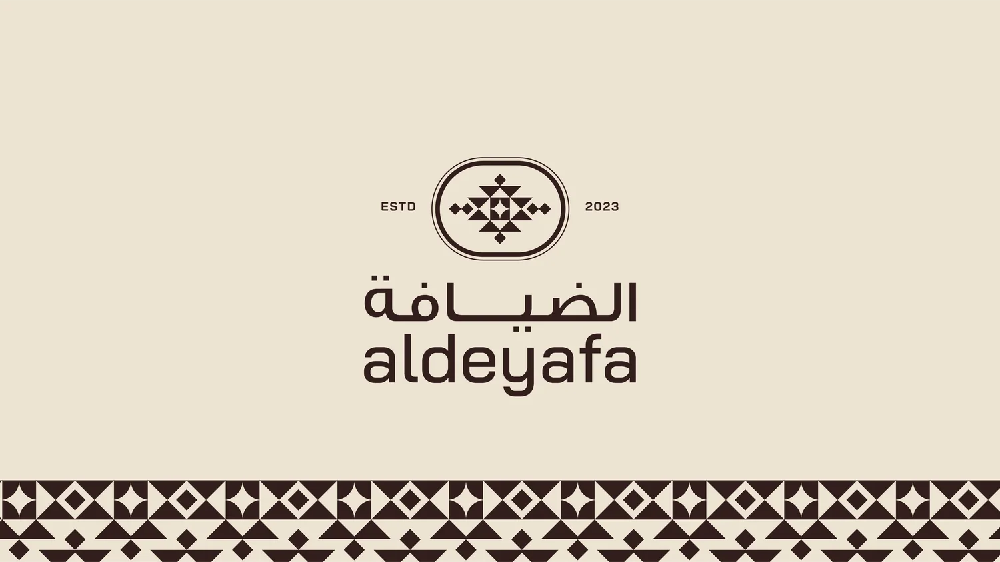
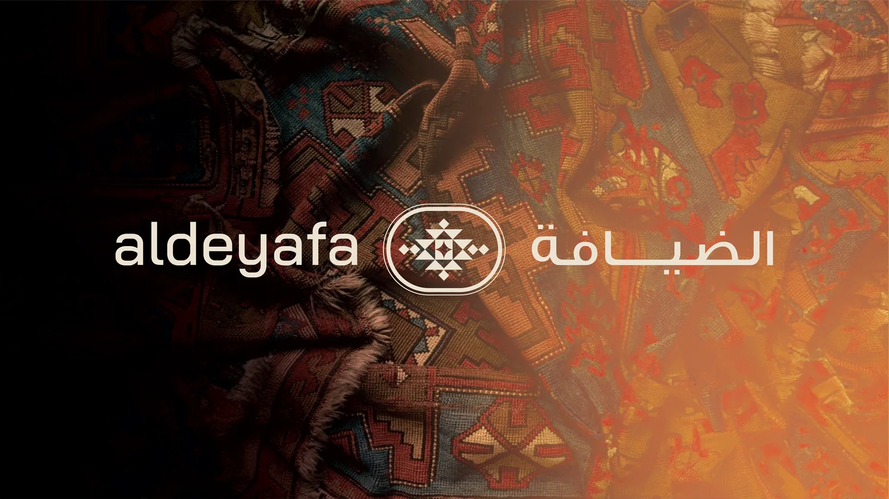
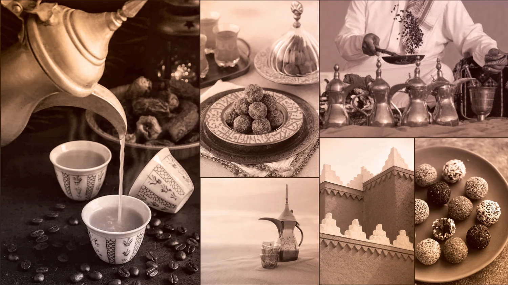
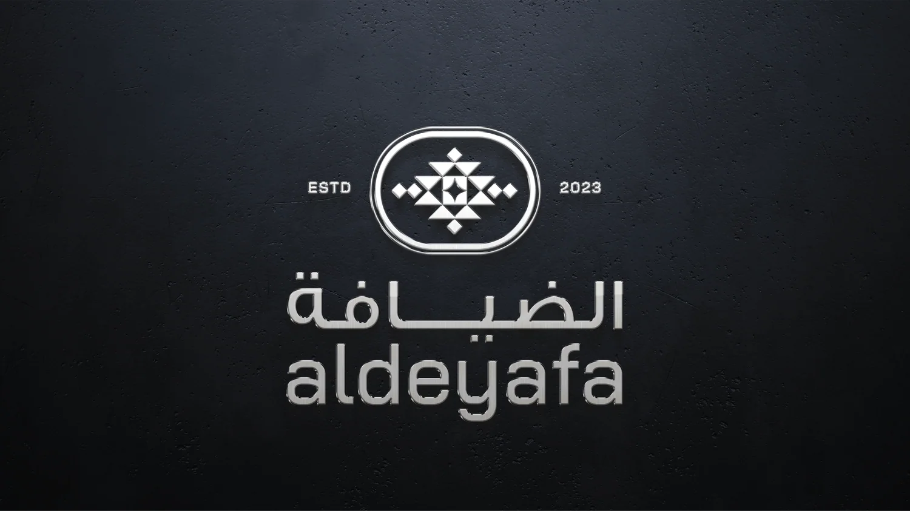
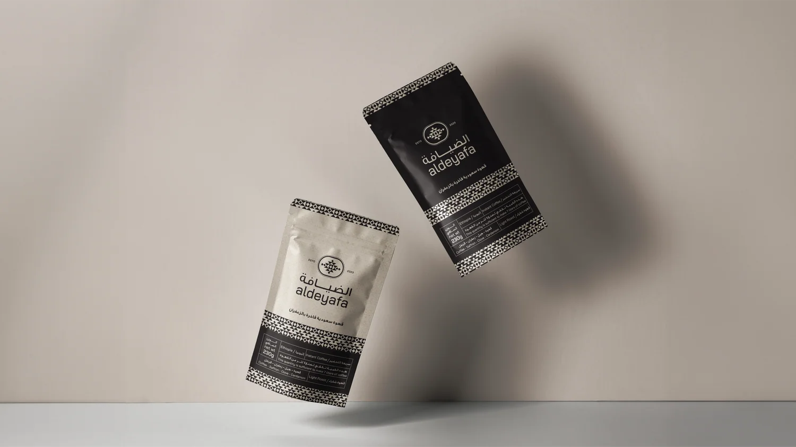
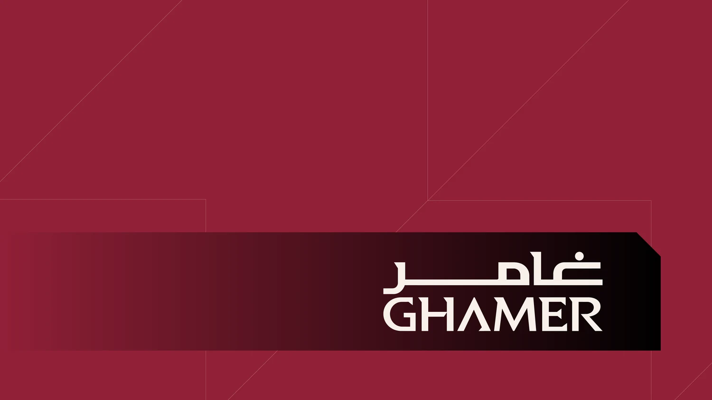

Aldeyafa
الضيافة
هوية علامة «الضيافة» تمزج الأصالة الثقافية بجمالية حديثة. يقوم الشعار على نمط هندسي تراثي، وتمتد الهوية إلى عبوات القهوة وعالم الضيافة العربية من الدلال والفناجين والتمر.









غامر
